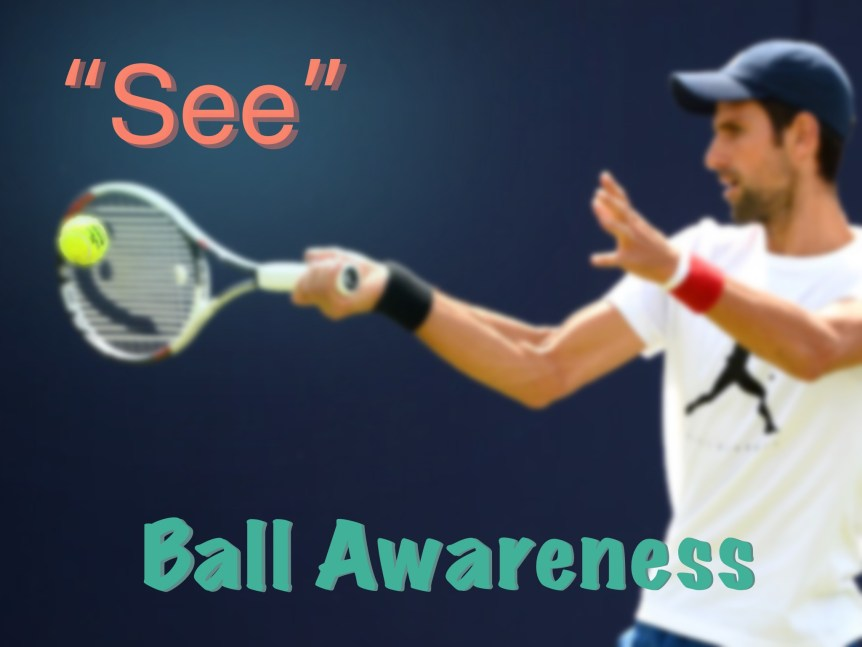

Ball Awareness¶
Ball Awareness¶
Ean Meyer¶
Ball Awareness

This video series opens the path to more detailed information and instruction that would improve your fundamentals in the game of tennis.
Ball Awareness | V1: Introduction to Ball Awareness
In the first installment of the Ball Awareness Series, Tennis.Pro introduces the importance of a player's awareness in three key aspects: the direction, speed, spin and height of the ball. This video opens the path to more detailed information and instruction that would improve your fundamentals in the game of tennis.
Ball Awareness | V2: Introduction to Height Recognition
Height recognition in tennis is an important concept that is often overlooked, or underestimated. The height of a ball can indicate where it's going to land, or how a player should prepare for the shot. In this video, Tennis.Pro introduces the correlation between the height of the ball and its position on court.
Ball Awareness | V3: Height Recognition Zone 5 with Player
When your opponent plays a ball that pushes you to all the way to the fence, how are you supposed to return in a way that prepares you for the next shot? This video reminds that a high ball should be acknowledged as a deep ball. Here you can see the player, Lauren, recognizing that the height represents depth.
Ball Awareness | V4: Height Recognition Zone 4 with Player
The neutral zone is also called your "home base". It's important to identify if the ball's going to land in the neutral sign by seeing the height of the ball. Remember: quick decisions spark quick reactions to play the ball correctly.
Ball Awareness | V5: Height Recognition Zone 3 with Player
As we move past Zone 4 and 5, we enter into Zone 3. A ball three windows above the net will most likely land inside the baseline. It's important as a player to identify the ball before it passes the net for a quick decision. Once you identify the ball, call it, hit, and return to the home base.
Ball Awareness | V6: Height Recognition Zones 2 + 1 with Player
A short, low ball landing in Zone 2 or Zone 1 can only mean one thing: it's time to end the point. Here in this video, Tennis.Pro trains our player to identify and react to balls landing in this zone to maximize time and energy.
Ball Awareness | V7: Height Recognition -- Combined Zones
After going through all five zones and their respective heights in detail, Tennis.Pro ties it all together. In this video, our student has to apply the knowledge she has learned to decide on how to react to a ball. Training a player to know how to deal with balls of different heights will improve their reactive strategy in competition.
Ball Awareness | V8: Height Execution in Zone 5 with Player
Now that we've understood height recognition, we will show you how to execute the decisions you should make. Being in Zone 5 means you should hit at least 5 windows high for the best defense. Applying this knowledge to the court will definitely improve your game.
Ball Awareness | V9: Height Execution in Zone 4 with Player
Unlike in Zone 5, Zone 4 will require a lower ball height from the shot. These zones differ in that Zone 5 is a defensive zone which requires a defensive shot while Zone 4 is a neutral zone, where you can hit the ball with 4 heights over the nets.
Ball Awareness | V10: Height Execution in Zone 3 with Player
In Zone 3, the optimal height of the ball over the net decreases to 3 windows over the net. When in Zone 3, not only does height matter, but also the direction of attack. This particular zone is different than others in these ways.
Ball Awareness | V11: Height Execution in Zone 2 with Player
Moving even closer to the net, the circumstances are completely different. In Zone 2, it is essential to move forward with a nice shot 2 heights above the net. This zone is the place to either end the point with a winner or set yourself up for one.
Ball Awareness | V12: Height Execution -- Combined Zones
Now that we've learned how to execute the ball in every zone, we can combine it! As we work through the combination of all 5 zones, we will show the progressions we use in practice.
Ball Awareness | V13: Introduction to Direction Recognition
Direction Recognition is the skill of both directing the ball to a certain place and knowing where the ball will go. It's important to look for the cues to see where the ball will land. For example, if an opponent stands a certain way, you can tell their next move. This is an important skill as it builds the foundation for good control.
Ball Awareness | V14: Direction Recognition Runway A with Player
When the ball is in Runway A, it is a very big area of a court. It's important to recognize that they are in that area. This awareness of your location on court will greatly improve your tennis game in the long run.
Ball Awareness | V15: Direction Recognition Runway B with Player
Now, we move on to Direction Recognition in Runway B with our player. After watching the Introduction to Runways, you should know a bit about Runway B. Like all our other videos featuring a player, we use our progressions to learn this: first by hand feed, and then racquet feed, and so on.
Ball Awareness | V16: Direction Recognition Runway C with Player
Now we progress to Runway C. Runway C is a running zone, and the key to successfully hitting the ball into Runway C is that when you practice, make the call before the ball crosses the net.
Ball Awareness | V17: Introduction to Speed Recognition
In this video, we introduce the concept of Speed Recognition. You can anticipate more or less the speed of a ball by looking at it. For example, if someone does an overhead from above the net, you know it's coming in fast. This is important in training your reaction to the ball.
Ball Awareness | V18: Speed Recognition with Player
Now we're moving on to recognizing speed with a player. The way we practice recognizing the speed is calling the ball before it flies over the net. We have three different calls: "Easy ball", "Neutral ball", and "Difficult ball".
Ball Awareness | V19: Introduction to Spin Recognition
This video is the introduction to spin recognition. Recognizing spin is to recognize the rotation on the ball. There are many types of rotations including topspin, sidespin, and backspin. Knowing what kind of spin you're dealing with will let you anticipate where you should make your shot.
Ball Awareness | V20: Spin Recognition with Player
In this video we recognize spin with a player. Again. we use our progressions to train our player. The first thing you do when practicing this, is to put yourself behind the service line and have someone feed you balls. Then you make the call to recognize what type of spin it is and shadow swing. Then, you can start hitting the ball and eventually practice becomes an important habit in games.
Ball Awareness | V21: Introduction to the 5 Responses
This is our introduction to the 5 Responses. We've been talking about recognition of speed, spin, and height, but this is where we move on to executions. The 5 responses are 1-Consistency, 2-Placement, 3-speed, 4-spin, and 5-Hitting The ball As It's Coming Off The Ground. These might sound confusing at first, but we'll explain each important term in detail.
Ball Awareness | V22: Placement Execution
Moving on to placement execution, the point where we plan to strike on our opponent's court can be accurately aimed if we know how to execute. In the video, we introduce the 7 different targets on the court that would serve to perhaps pull your opponent off the court or make them lose their balance.
Ball Awareness | V23: Speed Execution
The execution of how fast or slow the ball is, is just as important as the spin or placement. Giving your opponent a fast shot will give them less time to react and confusing them with a slow shot will catch them off guard. There's lots of ways to use the speed of your shot to your advantage.
Ball Awareness | V24: Spin Execution
Backspin, Topspin, and Sidespin are the three main spins in tennis you can use in your shots. Knowing when and how to switch these spins up during points will give you the upperhand against your opponent. Watch to learn how to execute these shots!
Ball Awareness | V25: On the Rise Execution
A common but costly mistake players make, is letting the ball bounce too high before they hit it. These high bouncing balls are sure to put the receiver of the shot off-tempo, and essentially their whole game off-balanced. Taking the ball on the rise will ensure a more controllable and powerful shot.
The END
level of player from beginner to professional, coaching tennis for over 25 years and have worked with many different levels of juniors and adults. In this time I have worked at high performance academies including Bollettieri's, Seguso-Bassett, Evert Tennis Academy and most recently, the Harold Solomon Tennis Institute. I've been published in tennis magazines in Brazil, Venezuela, Italy, South Africa and the U.S. and have conducted seminars for coaches in different countries. My coaching philosophy is very simple: Develop strong Fundamentals in 4 areas -- Technical, Tactical, Mental and Physical.
Visit his website at: https://eanmeyertennis.com and https://tennis.pro/